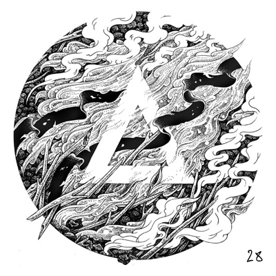

Interactive record. Each ring of grooves is a song. Press Enter to focus it and Escape to leave. Use the arrow keys to move between songs, and Enter to play one. Two songs aren't on YouTube and won't play.
No.028
Twentyeighth
It’s been a busy couple of weeks. I moved to New Delhi not too long ago and I’m still in the middle of rebuilding my life here. I haven’t heard a lot of exceptional music, unfortunately (given the lack of time at hand). But this will have to do, for now.
Also on YouTube
Tracklist
Running order
21 songs · two not on YouTube
-
I’ll Never KnowCharli xcx Not on YouTube. The player skips it.
-
Hippie DreamGitar Not on YouTube. The player skips it.
Take it home
The inlay card
Print it, cut it out, and fold it into a cassette case. You can also copy the tracklist and rebuild the mix wherever you listen.
Side A
- Soda Popinski Javelin
- Useless Beat Culture
- Do It Anyway Ben Folds Five
- Go Slow Haim
- Anna Charlotte Gainsbourg
- I’ll Never Know Charli xcx
- Seven Stars Air
- No One Gets Lost Elika
- Lost Weekend Tiny Victories
- Rising Below Dirty Three
- Kaiyo Maru Led Er Est
Side B
- Hippie Dream Gitar
- Lay Your Cards Out Polica
- Sleeping Ute Grizzly Bear
- Lonely Neighbour The Lost Lovers Brigade
- Drop The Other Emika
- Love Daughter
- Paralysed Catcall
- Tiny Painting Harry Rag
- Black Tongue Feist
- Get Free (feat. Amber of Dirty Projectors) Major Lazer
Twentyeighth
Album art featuring work by Pavel Ripley
Archive